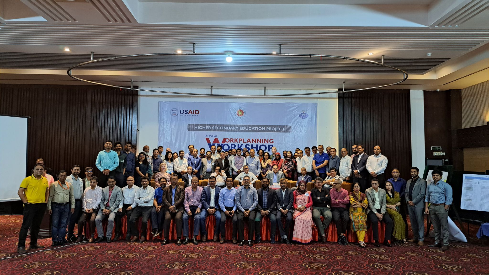

Data & Analytics Case Study
Measuring a National Teacher Training Platform Before It Was Shut Down
Designed the data architecture, dashboard, and pre-training diagnostic behind a national LMS built for USAID's Higher Secondary Education Project (HSEP), in partnership with Florida State University and Chemonics International, before the program was discontinued when USAID was dismantled in 2025.
- 0 Teachers tracked (382 TPD + 97 ELPD)
- 0 Colleges scoped nationally (99% of Bangladesh)
- $3M USAID grant, secured via competitive tender
- Feb 2025 Discontinued (USAID dismantled)
What I actually owned
The measurement problem, not the interface problem
Four organizations with different definitions of success, USAID (development outcomes), Florida State University (research validity), Chemonics International (implementation feasibility), and Bangladesh's Education Ministry (teacher adoption), needed one shared source of truth. Shazzad Hossain Mukit ran the program as PM; I owned the data side end to end.
- Designed the dashboard's entire metric architecture: enrollment, activation, completion, assessment performance, engagement time, comments, peer review, and live-class attendance, tracked separately for TPD (Teachers Professional Development, 8 modules) and ELPD (Educational Leadership Professional Development, 7 modules)
- Defined the operational logic stakeholders actually used: a learner counts as "activated" if they touch one content item on a given day, "completed" only at 80%+ of that day's assigned content
- Designed and scored a 36-item pre-training diagnostic (Knowledge, Skills, Attitudes) administered across 3 districts before rollout
- Built the BigQuery pipeline underneath it all, and re-verified every headline claim in this case study directly against it before publishing

The problem
The platform was live, but nobody had a shared way to tell if it was working
Bangladesh has 140,000+ high school teachers who need ongoing professional development, and no physical training pipeline that could reach them in under 50 years. HSEP's LMS was the digital alternative, but a live platform with no shared measurement layer just produces four different opinions about whether it's succeeding.
What the data showed
Teachers kept showing up. They finished less of each module as it went on
Every TPD module is built from 5 chapters, labeled Day 1 through Day 5. Averaged across all 8 modules, activation held steady in the 93-97% range through every chapter. Completion (the 80% threshold) started close behind at 94%, then eroded chapter by chapter to 78% by Day 5, the same pattern inside every module.
Peer review, not submission, was the real bottleneck
81-95% of enrolled teachers submitted at least one task, so submission was never the problem. The gap was downstream: against a designed 3-reviewer model, TPD submissions received only 36.6% of the intended review coverage, and 7.5% of submissions (191 of 2,556) got zero review at all.
2,556 TPD task submissions, averaging 1.1 peer reviews each against an intended 3. Only 36.6% of designed review capacity was actually delivered.
The pre-training diagnostic found a specific, teachable misconception
Across all three districts, teachers scored weakest on items testing whether instruction should stay uniform for every student, the exact belief differentiated-instruction training was meant to correct. Knowledge was the weakest category overall (68-71% correct), well behind Skills and Attitudes (79-86%).
Average correct % across Cumilla, Khulna, and Bogura. Items below 50% flagged as priority gaps for the next training phase.
Live-class attendance was consistently low per session, roughly 7% average turnout across 129 sessions, but the pattern held across programs, a scheduling and redundancy problem, not a single bad batch.
Reading the data coming back
The clearest signal came from comparing metrics, not from any one of them
Steady activation next to eroding completion. Strong submission next to weak review throughput. Each gap points at a different fix, and none of them are visible from enrollment numbers alone.

The outcomes
What shipped before the shutdown
- 0 Teachers instrumented end to end
- 8 + 7 TPD + ELPD modules delivered in full
- 0 Item diagnostic across 3 districts
- Nov-Jan Full rollout independently verified
The discontinuation
The shutdown shows up clearly in the data itself
A broad freeze on US foreign aid hit USAID-funded projects worldwide in late January 2025, and HSEP was formally discontinued by February. Restricted to the two most trustworthy activity signals in the log, real exam attempts and real task submissions, the platform goes from hundreds of active teachers every month to exactly zero.

Active teachers doing real graded work per month
Out of 479 teachers tracked overall. The freeze hit in late January 2025.
What I learned
Three things this project taught me
- Measurement has to be agreed on before it's trusted. With four organizations that would each read the same dashboard differently if they could, the job was picking metrics that couldn't be misread in isolation, activation next to completion, submission next to review throughput.
- A diagnostic before training beats a survey after it. Running the Knowledge/Skills/Attitudes assessment pre-training meant the misconception finding was something the next phase could act on, not just a retrospective grade.
- Don't trust a metric until you've traced it to a row you understand. Several early findings didn't survive checking the raw table. The habit that caught them, re-deriving from source before publishing, is the actual lesson, more than any single number.
Data verification notes